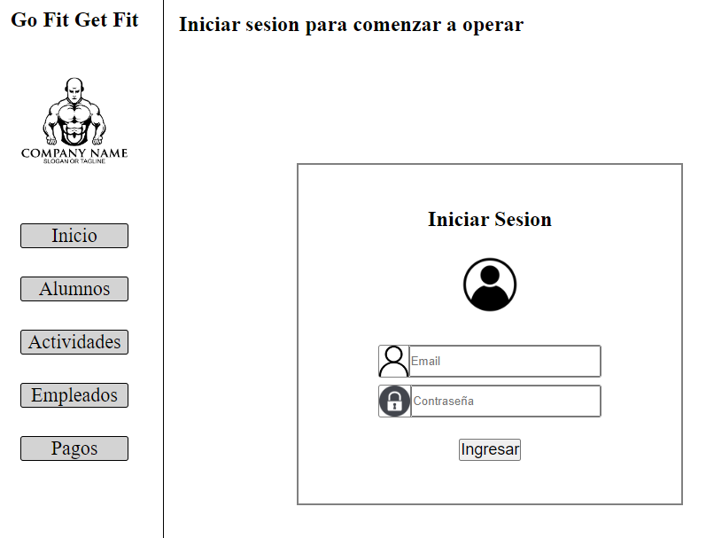
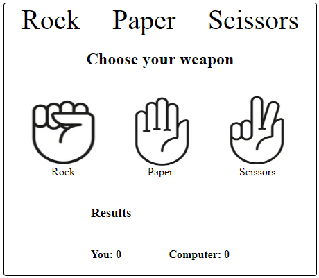

Julián Raso
Acerca de Mi
Soy desarrollador de aplicaciones web, cursando actualmente el ultimo año de carrera Ingeniería en Sistemas de la Información. A la par, realice el curso "Odín Project" para interiorizarme en el mundo del desarrollo de las web apps.
Trabajé como freelance para el desarrollo de una aplicación móvil "MedInfor" con el objetivo de informar a los pacientes acerca de los cuidados pre y posoperatorios.
Experiencia
MedInfor
Habilidades

MedInfor
La aplicación MedInfor fue diseñada y desarrollada para el Hospital Escuela con la intención de facilitar tanto a los médicos como para los pacientes la información necesaria para las indicaciones antes y después de sus operaciones.
Dentro de la aplicación se encuentra información relevante para los pre y postoperatorios de los pacientes. Cabe destacar que dicha información fue obtenida por médicos del propio hospital.
Proyectos

Go Fit Get Fit
El proyecto "Go Fit Get Fit" consiste en una aplicacion de administracion orientada a los gimnasios. La idea principal es que el dueño de la app pueda administrar los alumnos que asisten, los pagos de los mismo al igual que de sus empleados como tambien tener un listado de los ejercicios del dia.

Rock-Paper-Scissors
El proyecto "Rock-Paper-Scissors" consiste en el clasico juego Papel, Piedra o Tijeras donde el usuario juega al mejor de 3 rondas contra la maquina. Este proyecto fue desarrollador en html integrando CSS y JS, con la intención principal de aprender a integrar los distintos elementos de la programacion web.